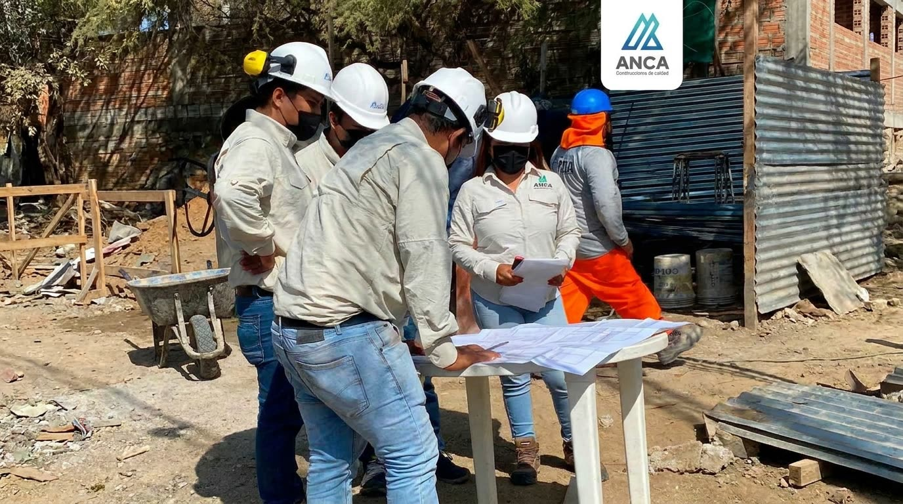

Empresas y sector público
Obras e ingeniería para tu organización
- Ejecución y supervisión de obras civiles
- Perfiles y expedientes técnicos (preinversión e inversión)
- Agua potable, alcantarillado, PTAR y bombeo
- Estructuras de concreto y metal mecánica
- Mantenimiento y rehabilitación de infraestructura
- Alquiler de maquinaria liviana y pesada